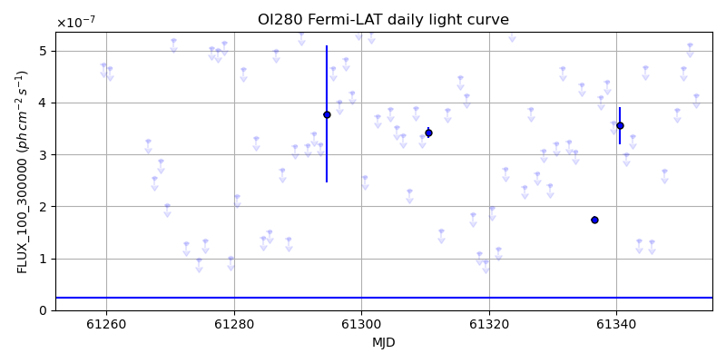
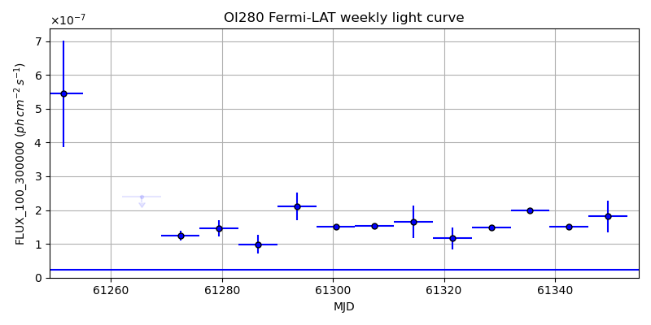
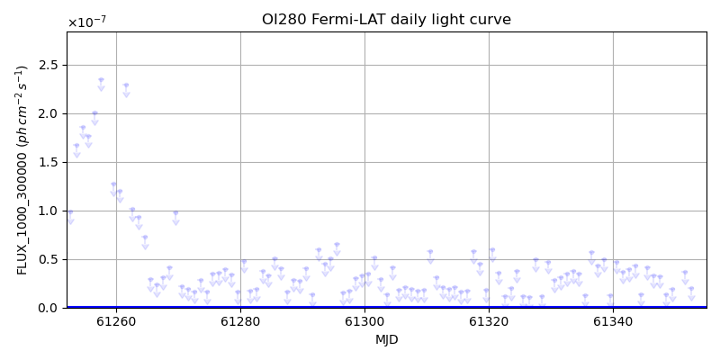
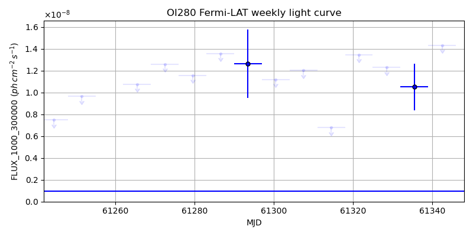

LAT Lightcurve site: https://fermi.gsfc.nasa.gov/ssc/data/access/lat/msl_lc/source/OI_280
NED: Query
Time of last update of this page: UT: 2026-11-06 16:19 (MJD: 61350.680)
| Property | Value |
|---|---|
| R.A. | 7:51:05.28 |
| Dec. | 12:36:50.4 |
| z | 0.889 |
| 3FGL SpectrumType | PowerLaw |
| 3FGL PL Index | 2.41 |
| 3FGL Flux_100_300000 | 2.42e-08 1 / (s cm2) |
| 3FGL Flux_1000_300000 | 9.38e-10 1 / (s cm2) |
| 3FGL Flux >200 GeV | 5.30e-13 1 / (s cm2) |
| 3FGL Extrap. Crab >200 GeV | 0.00 |
| 3FGL Flux After EBL Absorption >200GeV | 1.36e-14 1 / (s cm2) |
| 3FGL EBL Crab Fraction >200GeV | 0.00 |

| MJD | dMJD | Flux | dFlux | Frac3FGL | FracCrab>200GeV | EBLFracCrab>200GeV |
|---|---|---|---|---|---|---|
| 61345.50 | 0.50 | 1.32e-07 | 0.00e+00 | 0.00 | 0.00 | 0.00 |
| 61346.50 | 0.50 | 5.83e-07 | 0.00e+00 | 0.00 | 0.00 | 0.00 |
| 61347.50 | 0.50 | 2.69e-07 | 0.00e+00 | 0.00 | 0.00 | 0.00 |
| 61348.50 | 0.50 | 5.70e-07 | 0.00e+00 | 0.00 | 0.00 | 0.00 |
| 61349.50 | 0.50 | 3.86e-07 | 0.00e+00 | 0.00 | 0.00 | 0.00 |

| MJD | dMJD | Flux | dFlux | Frac3FGL | FracCrab>200GeV | EBLFracCrab>200GeV |
|---|---|---|---|---|---|---|
| 61314.50 | 3.50 | 1.66e-07 | 4.74e-08 | 6.85 | 0.02 | 0.00 |
| 61321.50 | 3.50 | 1.17e-07 | 3.27e-08 | 4.83 | 0.01 | 0.00 |
| 61328.50 | 3.50 | 1.49e-07 | 3.06e-09 | 6.17 | 0.01 | 0.00 |
| 61335.50 | 3.50 | 2.00e-07 | 2.85e-09 | 8.26 | 0.02 | 0.00 |
| 61342.50 | 3.50 | 1.52e-07 | 1.68e-09 | 6.28 | 0.01 | 0.00 |

| MJD | dMJD | Flux | dFlux | Frac3FGL | FracCrab>200GeV | EBLFracCrab>200GeV |
|---|---|---|---|---|---|---|
| 61345.50 | 0.50 | 4.12e-08 | 0.00e+00 | 0.00 | 0.00 | 0.00 |
| 61346.50 | 0.50 | 3.29e-08 | 0.00e+00 | 0.00 | 0.00 | 0.00 |
| 61347.50 | 0.50 | 3.26e-08 | 0.00e+00 | 0.00 | 0.00 | 0.00 |
| 61348.50 | 0.50 | 1.35e-08 | 0.00e+00 | 0.00 | 0.00 | 0.00 |
| 61349.50 | 0.50 | 1.93e-08 | 0.00e+00 | 0.00 | 0.00 | 0.00 |

| MJD | dMJD | Flux | dFlux | Frac3FGL | FracCrab>200GeV | EBLFracCrab>200GeV |
|---|---|---|---|---|---|---|
| 61314.50 | 3.50 | 6.78e-09 | 0.00e+00 | 0.00 | 0.00 | 0.00 |
| 61321.50 | 3.50 | 1.35e-08 | 0.00e+00 | 0.00 | 0.00 | 0.00 |
| 61328.50 | 3.50 | 1.23e-08 | 0.00e+00 | 0.00 | 0.00 | 0.00 |
| 61335.50 | 3.50 | 1.05e-08 | 2.15e-09 | 11.22 | 0.03 | 0.00 |
| 61342.50 | 3.50 | 1.43e-08 | 0.00e+00 | 0.00 | 0.00 | 0.00 |
--------------------------------------------------------- Using user-supplied coords: 7:51:05.28 12:36:50.4 2000 --------------------------------------------------------- FLWO UT night of: 2026-11-07 Local Sid. @ Midnight: 02:42 Sunset (-15.0) (local, UT): 18:39 01:39 Sunrise (-15.0) (local, UT): 05:36 12:36 Moonrise (local, UT): 05:16 12:16 Moonset (local, UT): Moon phase: 0.04 --------------------------------------------------------- AzTime LSID UT Obj_el Obj_az Mn_el Mn_az Sep. --------------------------------------------------------- 18:39 21:20 01:39 -41.0 28.9 -35.5 278.9 80.1 19:09 21:50 02:09 -37.5 37.2 -41.6 283.5 80.5 19:39 22:20 02:39 -33.3 44.6 -47.5 288.8 80.8 20:09 22:50 03:09 -28.6 51.2 -53.3 295.3 81.1 20:39 23:20 03:39 -23.4 57.0 -58.7 303.4 81.5 21:09 23:50 04:09 -17.9 62.1 -63.5 313.9 81.8 21:39 00:20 04:39 -12.1 66.8 -67.5 328.0 82.2 22:09 00:50 05:09 -6.0 71.1 -70.0 346.2 82.5 22:39 01:20 05:39 0.5 75.2 -70.5 6.9 82.9 23:09 01:51 06:09 6.4 79.1 -68.8 26.6 83.2 23:39 02:21 06:39 12.6 82.9 -65.4 42.5 83.6 00:09 02:51 07:09 19.0 86.7 -60.9 54.4 83.9 00:39 03:21 07:39 25.3 90.5 -55.8 63.5 84.3 01:09 03:51 08:09 31.7 94.7 -50.2 70.6 84.6 01:39 04:21 08:39 38.1 99.1 -44.4 76.4 85.0 02:09 04:51 09:09 44.3 104.2 -38.4 81.4 85.3 02:39 05:21 09:39 50.4 110.2 -32.4 85.8 85.6 03:09 05:51 10:09 56.3 117.7 -26.3 89.9 85.9 03:39 06:21 10:39 61.7 127.4 -20.2 93.7 86.2 04:09 06:51 11:09 66.3 140.5 -14.2 97.5 86.5 04:39 07:21 11:39 69.6 158.0 -8.1 101.2 86.8 05:09 07:52 12:09 70.9 179.6 -1.2 105.0 87.0 05:36 08:19 12:36 69.9 199.4 3.4 108.6 87.3 --------------------------------------------------------- Dark hours >55 deg.: 2.22 srcstart (UT): 2026-11-07 10:02 srcend (UT): 2026-11-07 12:15